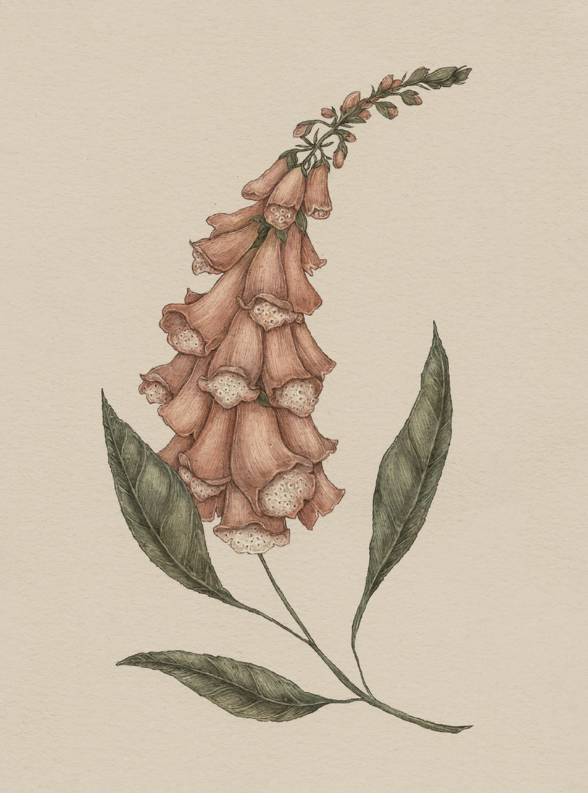

Plate FOXGLOVE
The Language of Flowers
Foxglove Study

Foxglove
Digitalis
Definition: A flower associated in floriography with riddles and secrets.
Meaning
- Riddles
- Secrets
Origin
Foxglove has long been associated with fairy folklore in the British Isles. Its name may have been
"folkglove" originally, as fae folk, or fairies, were said to hide within its blooms. Children who
wished to see the fairies and hear their riddles would peer inside these flowers. Picking a foxglove,
however, was thought to be bad luck, as it robbed the fairies of their homes; this rumor may have
begun to keep children from touching these blooms, which could be deadly if consumed.
Pair With
- Lavender to warn a friend of an unfaithful love
- Hyacinth to ask for forgiveness for divulging a secret